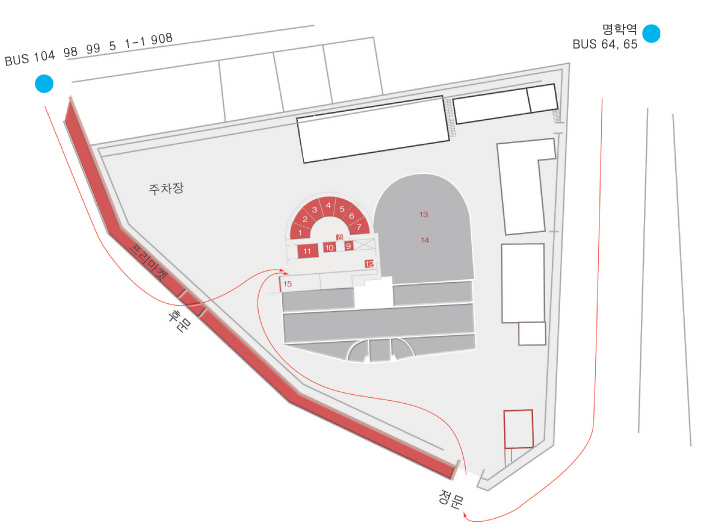

리바이벌
2003 보충대리공간 스톤앤워터 기획전
2003_0819 ▶ 2003_0907
_waifu2x_photo_noise2_scale.png)
초대일시_2003_0819_화요일_06:00pm
참여작가
김창겸_김해민_김지영_오이량_김병직_류호열_김형석_이기일
지용호_노미리_김은남_최희경_노현탁_오정석_김명진_양민수
나진환_이웅배_박호빈_예술시장 프리마켓팀
책임기획_김지영
2003_0819_화요일_06:30pm_오픈 퍼포먼스
스케노스-영혼이 머무는 장소_박호빈.안무 나진환.연출 이웅배.무대설치
2003_0819_화요일_05:00pm~06:00pm_실험영화 상영
양민수_Wall, Space, Central_멀티프로젝션 디지털 비디오_00:20:00_2003
예술시장 프리마켓__안양 신필름예술센터 앞
2003_0819_화요일_01:00pm~06:00pm
2003_0831_일요일_01:00pm~06:00pm
2003_0907_일요일_01:00pm~06:00pm
문의_스톤 앤 워터_Tel. 031_472_2886
신필름예술센터
경기도 안양시 안양6동 576-2번지 국철 1호선 명학역 앞

'리바이벌(revival)'의 문자적 의미는 '소생', '재생', '부활', '부흥', '재유행' 등이다. 이 리바이벌의 개념은 먼저 전시장소인 안양 신필름예술센터가 갖는 독특한 역사적 상황과 맥락 속에서 도출된 개념이다. '성춘향', '사랑방손님과 어머니' 등으로 널리 알려진 신필름의 창립자 신상옥 감독과 영화배우 최은희는 1964년 안양에 영화예술학교를 세운 후, 1978년 강제납북됨으로써 그 영화예술학교는 공매에 넘어가게 된다. 그 후 그들은 1986년 북한을 탈출하여 미국에 머물다 2000년 고국으로 돌아온다. 그 후 구 안양 경찰서를 장기 임대하여 현재 신필름예술센터를 건립함으로써 옛 안양영화예술학교를 재건하기에 이른다.
_waifu2x_photo_noise2_scale.png)
따라서 2003년 7월 탄생된 신필름예술센터는 신상옥 감독의 생과 사를 넘나든 인생의 극적인 부활일 뿐만 아니라 그간 단절된 역사를 봉합하는 시공의 부활이기도 하다. 이와 같이 신필름예술센터의 역사적 맥락에 주목하고자 하는 '리바이벌(revival)'전은 구 안양경찰서의 부채꼴 형태의 유치장을 개조한 장소에서 개최되는데, 그곳을 크게 3개의 공간으로 구분할 수 있다. 건물외부 공간, 의상실(구 유치장), 분장실과 작은 사무실, 무대세트실 등을 포함한 내부공간, 연극이나 영화를 상영할 수 있는 별도의 영상 공연장 등이 그것이다.
_waifu2x_photo_noise2_scale.png)
_waifu2x_photo_noise2_scale.png)
이와 같이 이번 전시는, 과거의 경찰서 유치장의 물리적 흔적을 묻어버리고 전혀 다른 새로운 문화적 공간으로 탄생됨으로써 과거 안양영화예술학교의 문예부흥의 꿈이 실현되는 장소 속에서 실현된다. 여기에는 16명의 영상, 평면, 설치 작가와 퍼포먼스팀과 이벤트 팀이 참여한다. 참여작가들은 이 리바이벌의 개념을 패러디하거나 현상적이거나 물질적인 방식으로 드러내고자 한다. 먼저 건물외관에는 오정석, 김명진의 공동작으로서 옛 영화 중요 장면을 패러디 하여 배우들을 실제 전시참여작가들로 대치시킨 간판 작업이 걸려 복고풍의 향수를 자아내게 한다. 5개의 독립된 의상실에는 김창겸, 김해민, 김병직, 김지영, 류호열의 영상 작업이 전시된다. 김해민은 신감독이 각각 남북에서 촬영한 '춘향전'의 첫날밤 장면들을 모아 각색하여 새롭게 리바이벌시킨다.
_waifu2x_photo_noise2_scale.png)
김병직은 신감독이 북에서 최초로 제작했던 이준열사의 일대기를 담은 미공개된 수작 '돌아오지 않은 영웅'과 한국에 돌아와서 최초로 제작한 '마유미'를 토대로 새로운 예고편의 형식의 영상 작업을 선보임으로써 신필름의 비극적 시간의 단절을 메꾸고자 한다. 옛 면회실이었던 작은 방 3개에서는 이기일과 김형석의 설치작업이 전시된다. 이기일은 디지털카메라로 찍은 생화를 프린트함으로써 마치 생명이 없는 조화처럼 보이게 했다. 그러나 방향제를 설치해 마치 향기나는 생화를 연상시키게 함으로써 리바이벌의 개념을 현상적으로 보여준다. 이에 비해 김형석은 네온이 주는 빛, 희망 등을 암시하는 재료적 특성을 강조함으로써 개념적으로 다가간다. 분장실 로비에는 탑 형태로 구축된 오이량의 영상 설치작업이 전시된다. 특별무대로서 오프닝시 나진환 연출의 퍼포먼스 '영혼이 머무는 장소'가 세계적 안무가 박호빈에 의해 공연된다. 희랍어 '스케노스'에서 유래한 '영혼이 머무는 장소' 또한 이제 신상옥 감독의 영원한 안식처가 될 신필름센터의 개념을 드러내주는 용어이다.
_waifu2x_photo_noise2_scale.png)
이번 전시는 안양시에 생긴 최초의 대리공간이자 보충공간인 스톤 앤 워터와 새로운 문화센터의 구심점이 될 안양 신필름예술센터가 한 접점으로써 만난다는 데에 큰 의미가 있다. 그 접점을 통해 이제껏 문화적으로 크게 주목받지 못한 변두리에 있었던 안양시가 활발한 문화부흥의 중심지로서 자리매김 하는 데에 촉매제와 기폭제가 될 것이다. 이제 새로운 문예부흥이 안양시에서 일어난다.
■ 김지영